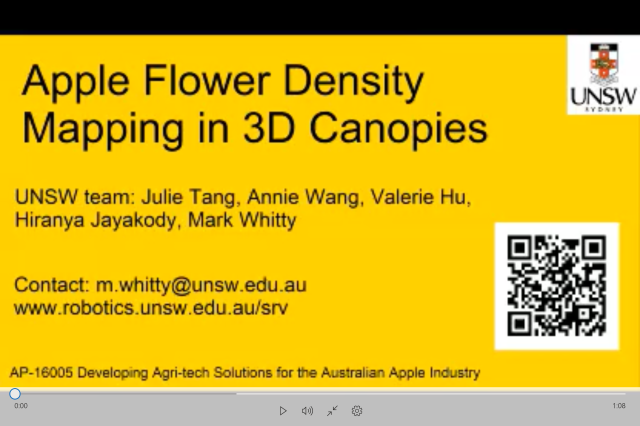

Apple Flower Sensing Project
Developing Agri-tech Solutions for the Australian Apple Industry
To develop a product which will perform autonomous flower density mapping and tree canopy measurement and to provide decision support to in turn apply variable rate autonomous spraying in apple orchards. This can then be utilised by the orchardist to make better decisions to improve both quality and yield and reduce production costs including labour and chemical use. The project is led by SwarmFarm Robotics and funded by Hort Innovations and includes ADAMA as partner.
- Project Manager: Will McCarthy(SwarmFarm Robotics)
- Chief Investigator: Mark Whitty (UNSW Australia)
- UNSW Researchers: Julie Tang, Hiranya Jayakody
- Annie Xu Wang, Valerie Mengying Hu
Check out our latest update on a new concept we've termed "VTA" or "Variable Timing of Application".
Check out how bloom percentage varies across a 5 day period below! This data can be utilised for VTA.
A video showing current progress with apple flower detection from night time images is available here

There are two main components for sensing in this project which UNSW is focussed on: